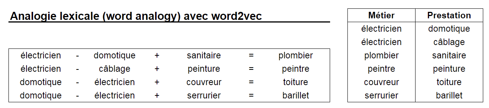

Je sais détecter des mots-clés
Un texte arrive : une description d'activité, un mail, un contrat. Le premier réflexe, le bon, est de chercher des mots et des motifs. C'est déterministe, gratuit, et un juriste peut l'auditer. Avant de sortir un modèle, on épuise cette voie.
Deux exemples nous suivent jusqu'à la fin du module. À chaque marche, on regarde ce que la technique en fait, et où elle casse. Le mail, lui, est le cas du module 03.
Détecter l'activité
Un texte libre doit devenir un code d'activité : « Nos artisans depuis 1990 pour vos installations sanitaire… » devient plomberie. C'est le geste de la souscription pro : le risque dépend de l'activité, et personne ne l'écrit comme dans la nomenclature.
Lire le sentiment
Un avis ou un mail doit devenir une note : « Toujours pas de réponse, c'est inadmissible » est négatif, « Merci pour la rapidité » est positif. C'est le geste du service client : repérer l'insatisfaction avant la résiliation.
Le motif exact : la regex
| Ce qu'on cherche | Le motif |
|---|---|
| Code postal | \d{5} |
| Date | \d{2}/\d{2}/\d{4} |
| SIRET, IBAN, email | défini une fois pour toutes |
Déterministe, gratuit, auditable par un juriste. Quelques microsecondes par document.
Le dictionnaire métier
Une liste de termes validée par les experts : « sinistre », « résiliation », « ballon », « robinet ». Coût presque nul, résultat maîtrisé, et elle sait des choses qu'aucun modèle générique ne sait. Pour le sentiment, deux listes suffisent pour commencer : les mots qui fâchent (« inadmissible », « délai », « toujours pas ») et ceux qui rassurent (« merci », « rapide », « parfait »), et on compte.
« CRM » : qu'est-ce que c'est pour un modèle entraîné sur Internet ? Et pour un gestionnaire auto ?
Voir la réponse
CRM, en assurance auto, c'est le coefficient de réduction-majoration. Pour un modèle entraîné sur Internet, c'est customer relationship management. Le dictionnaire validé par le métier gagne.
1966 : un chatbot sans aucun modèle
En 1966, un programme tenait une conversation de psychothérapeute assez bien pour faire illusion. Sans aucun apprentissage. Avec quoi, à votre avis ?
Voir la réponse
ELIZA (Joseph Weizenbaum, MIT) tenait une conversation de psychothérapeute avec trois mécanismes seulement : des mots-clés classés par priorité, des gabarits de réponse à trous, et le renvoi des pronoms (« my » devient « your »). Aucun apprentissage, aucun réseau de neurones : la reconstruction ci-dessous tient en quelques centaines de lignes de règles. Beaucoup d'utilisateurs de l'époque lui ont prêté une compréhension qu'elle n'avait pas.
Ce que la démo montre : tant que la phrase contient un mot-clé prévu, l'illusion tient. Dès qu'elle n'en contient pas, ou que le mot est mal orthographié, ELIZA relance avec une phrase passe-partout. C'est la limite de la section suivante, et c'est encore aujourd'hui la limite d'un dictionnaire métier utilisé seul.
Étiqueter chaque mot : la base de l'extraction et de l'anonymisation
La reconnaissance d'entités nommées (NER) repère dans le texte brut les personnes, dates, lieux, organisations, numéros. C'est ce qui permet de retirer les données personnelles avant d'envoyer un texte à un modèle externe.
Une cascade regex + dictionnaire, puis deux modèles de NER, puis un LLM par-dessus. À votre avis, que gagne chaque couche ?
Voir la réponse
Sur un corpus de test de 61 données personnelles, une cascade regex + dictionnaire en retrouve 77 % avec 98 % de précision. En ajoutant deux modèles de NER, on atteint 100 % de rappel. En ajoutant un LLM par-dessus : aucun gain mesurable. Les couches déterministes sont en plus reproductibles et auditables pour le DPO, ce qu'un pipeline « tout LLM » n'est pas.
Prenez trois descriptions d'activité (un site web, un KBIS, un devis) et trois avis clients. Sur papier, listez les mots-clés qui suffiraient à coder l'activité, puis ceux qui suffiraient à dire si l'avis est positif ou négatif. Cherchez ensuite le texte qui met votre liste en échec : une faute, un synonyme, une formulation détournée. C'est la section suivante.
Ce que vous allez trouver
Une courte liste de mots code la majorité des activités et note la majorité des avis sans se tromper. Elle casse sur trois profils : la faute de frappe (« plonbier »), le synonyme ou la périphrase (« fuite sous l'évier » sans le mot plomberie, « je ne reviendrai pas » sans un seul mot négatif), et le texte qui n'a aucun mot de votre liste. Ce sont les trois parades de la section suivante, de la plus simple à la plus profonde. « Pas mécontent du tout », qui contient un mot négatif et dit le contraire, est une autre limite : l'ordre des mots, section 3.
Les mots-clés ne suffisent pas
Le monde réel n'écrit pas comme un dictionnaire. « Gros Malhon » devient « Gros Malon », « plombier » devient « plonbier », et un texte parle de plomberie sans jamais écrire « plomberie » : « sanitaire », « robinet », « fuite ». Un avis dit « je ne reviendrai pas » sans un seul mot de la liste des mots qui fâchent. Trois parades, de la plus simple à la plus profonde.
Le motif approché
La distance de Levenshtein compte les lettres à changer : « Gros Malon » et « Gros Malhon » sont à 1, « Gros Ballon » à 2, « Victor Hugo » à 10. Les variantes phonétiques (Soundex) rattrapent « Malland ».
Indispensable pour joindre des contrats et des sinistres mal saisis : « AXA », « AXA SA », « A.X.A. ».
Compter les mots
Le sac de mots transforme un texte en colonnes : une par mot du vocabulaire, avec sa fréquence. TF-IDF pondère chaque mot par sa rareté : « le » ne compte pas, « subrogation » compte beaucoup.
Une base solide pour classer. Mais « voiture » et « automobile » restent deux colonnes étrangères.
Donner un sens aux mots
L'embedding place chaque mot dans un espace où les sens proches sont proches. « Plombier » et « sanitaire » deviennent voisins. Un mot jamais vu a quand même une position.
C'est la brique qui porte tout le reste : recherche sémantique, RAG, LLM.
La parade 2, en détail : on cesse d'écrire les règles, la machine les apprend
Jusqu'ici, quelqu'un écrivait les règles : la regex, le dictionnaire. Le sac de mots change le métier. On donne des exemples déjà classés, et un modèle apprend seul quels mots pèsent pour quelle famille. C'est le machine learning classique, celui qui code encore aujourd'hui l'essentiel des activités, et qui traite l'essentiel du courrier d'un assureur. Sur l'exemple 1 : quatre descriptions d'activité, trois déjà codées, une à prédire.
| Description (extrait) | sanitaire | robinet | tableau | câblage | toiture | Activité |
|---|---|---|---|---|---|---|
| « Installation sanitaire, remplacement de robinet » | 1 | 1 | 0 | 0 | 0 | Plomberie |
| « Mise aux normes du tableau électrique et câblage » | 0 | 0 | 1 | 1 | 0 | Électricité |
| « Réfection de toiture, zinguerie » | 0 | 0 | 0 | 0 | 1 | Couverture |
| « Tableau de bord sanitaire des bâtiments, audit et conseil » | 1 | 0 | 1 | 0 | 0 | à prédire |
Un texte devient une ligne de chiffres
Une colonne par mot du vocabulaire, la valeur est le nombre d'occurrences. L'ordre des mots est perdu, d'où le nom. Quatre descriptions suffisent à voir l'idée ; en vrai, quelques milliers de descriptions déjà codées et quelques milliers de colonnes.
Pondérer par la rareté
« artisan » est dans presque toutes les descriptions : poids proche de zéro. « zinguerie » est dans une sur mille : poids fort. Le poids d'un mot dans un texte, c'est sa fréquence dans le texte multipliée par la rareté du mot dans le corpus. Rien à écrire à la main, tout se calcule.
Des poids appris, une somme, un seuil
Une régression logistique apprend un poids par mot et par activité : « sanitaire » vaut + 2,1 pour Plomberie, − 0,8 pour Électricité. Pour une nouvelle description, on additionne les poids des mots présents, l'activité au score le plus haut gagne, et l'écart avec la deuxième donne la confiance. Pour le sentiment, même mécanique : « inadmissible » pèse − 3, « merci » + 1.
Sur des familles bien séparées, ce niveau atteint souvent 90 % de bon classement avec quelques milliers d'exemples, pour un coût nul par texte et une explication lisible : les mots qui ont pesé. C'est l'étage qui code la majorité des activités, et qui absorbe la majorité du courrier dans la cascade du module 03. La quatrième description montre sa limite : « sanitaire » et « tableau » sont là, mais c'est un bureau d'études qui audite des bâtiments, ni un plombier ni un électricien. Pour le sentiment, « pas mécontent » compte un mot négatif. Il lui manque le sens des mots et leur ordre : la parade 3, puis la section suivante.
La parade 3, en détail : chaque mot reçoit des nombres


La parade 3, appliquée : chercher sans mots communs
Le contrat dit « la date à laquelle votre couverture commence ». Aucun mot commun. Zéro résultat.
Même sens, vecteurs proches. La phrase entière est encodée : le groupe de mots l'emporte sur les mots isolés.
Pour un embedding, « Capitale de la France ? » et « Capitale de l'Italie ? » sont-elles proches ou éloignées ?
Voir la réponse
Un embedding mesure une ressemblance, pas une réponse. « Capitale de la France ? » est très proche de « Capitale de l'Italie ? » : même forme, réponses différentes. La parade, et la répartition des rôles entre embeddings et LLM, sont au module 03, quand on cherche dans un corpus.
L'ordre des mots compte
Moyenner les vecteurs des mots d'une phrase donne un vecteur par phrase. Pratique, mais l'ordre disparaît : « le gestionnaire a été réactif » et « le gestionnaire n'a pas été réactif » deviennent presque identiques. Même chose pour l'activité : « vente de matériel de plomberie » a tous les mots d'un plombier, et c'est un négoce. Il faut des modèles qui lisent la séquence.
Le RNN lit dans l'ordre
Un état de mémoire mis à jour mot après mot. Appliqué au texte à grande échelle en 2014, il a inventé la traduction neuronale (encodeur-décodeur). Mais la mémoire s'essouffle sur les longs textes, et rien ne se parallélise : lent à entraîner.
Le CNN lit par fenêtres
Des filtres glissent sur la séquence et repèrent des motifs locaux de 2 à 5 mots : « n'a pas été réactif » et « vente de » deviennent des motifs détectés. Rapide, parallèle. Mais aveugle aux dépendances longues.
L'attention regarde tout
Chaque mot regarde tous les autres, en parallèle, et se met à jour avec le contexte. C'est le Transformer, « Attention Is All You Need ». La base de tous les LLM.
L'attention en une phrase : le contexte désambiguïse chaque mot
Encodeur seul · BERT
Lit tout le texte dans les deux sens. Le meilleur pour comprendre : classer, extraire, repérer des entités. Le choix naturel pour coder une activité, noter un avis ou classer un mail.
Décodeur seul · GPT
Lit de gauche à droite et génère le mot suivant. La famille de tous les chatbots. Excellent pour rédiger, résumer, dialoguer.
Les deux · T5
Encode l'entrée, décode la sortie. Le format naturel de la traduction et de la réécriture : un texte entre, un autre texte sort.
Des modèles successifs, jusqu'aux LLM
Chaque rupture lève une limite sans remplacer la précédente. La prédiction du mot suivant, elle, a 75 ans : ce qui a changé en 2017, c'est l'échelle, et la possibilité d'apprendre sur tout Internet sans que personne n'étiquette quoi que ce soit.
Le texte est son propre label
La rupture n'est pas seulement l'attention, c'est l'auto-supervision : on cache un mot et on demande au modèle de le deviner. Aucun humain n'étiquette. Tout Internet devient un jeu d'entraînement gratuit. Puis vient une seconde phase, coûteuse : des humains notent des réponses pour rendre le modèle serviable (RLHF). C'est de cette seconde phase que viennent le ton, les tournures reconnaissables, et le « thinking » des modèles récents.
Un modèle, physiquement
~140 Go de poids pour un modèle ouvert de 70 milliards de paramètres, et ~500 lignes de code pour le faire tourner. Une nature morte, pas un Terminator.
Le texte entre sous forme d'identifiants numériques. Le dictionnaire ne pèse que 5 à 10 % des paramètres : les 90 % restants, personne ne sait les lire.
Ordre de grandeur de l'entraînement : environ 2 millions de dollars. L'inférence, elle, se facture au million de tokens.
Chaque étape a rendu service, et aucune n'a remplacé la précédente. Le dictionnaire code les activités écrites comme dans la nomenclature et note les avis tranchés. TF-IDF et un classifieur apprennent sur des exemples et absorbent la majorité des cas. BERT lit la négation et les nuances. Le LLM code une activité jamais vue et lit l'ironie d'un avis sans un seul exemple annoté, cent à mille fois plus cher par texte. La cascade du module 03 est exactement cet empilement.
Sur un corpus de déclarations de sinistres, on compte les paires de mots : après « dégât », « des » apparaît 412 fois, « important » 87 fois. On normalise en probabilités. La table de comptage est le modèle. On génère ensuite en tirant le mot suivant et en recommençant : « suite à un dégât des eaux de la toiture de la déclaration de la fuite… ». Localement plausible, globalement incohérent. Puis on agrandit le contexte. Question : avec un vocabulaire de 30 000 mots, combien de cases dans la table avec un mot de contexte ? Avec deux ? Avec trois ?
Voir la réponse
Un mot de contexte : 30 000 × 30 000, soit 900 millions de cases. Deux mots : 30 000 au cube, soit 27 000 milliards. Trois mots : 810 millions de milliards. Aucun corpus ne remplit une table pareille, presque toutes les cases resteraient vides. C'est la limite qui appelle un réseau qui compresse et généralise. Le bigramme et GPT partagent la même tâche, la même boucle, les mêmes symptômes ; seule la qualité du contexte change.
Le texte n'arrive jamais propre
Tout ce qui précède travaille sur une phrase isolée. Dans la vraie vie, l'activité est à la page 3 d'un KBIS, le mail ne se comprend qu'avec le dossier, et les documents sont dix mille. Aucun modèle ne règle cela à votre place, et c'est là que passe le temps d'un projet.
Le PDF complet, pas la phrase
L'activité d'une entreprise est à la page 3 de son KBIS, sous « activité principale », à côté d'un tampon. Le sentiment d'un client est au dernier paragraphe d'un courrier de trois pages. Avant tout modèle : extraire le texte, et l'OCR si c'est un scan ; garder la structure, titres et tableaux ; découper en morceaux. Un modèle lit une fenêtre de texte, pas un classeur : plus c'est long, plus c'est cher, et il perd le fil (module 01).
Un document long n'est pas une longue phrase, c'est une structure à retrouver. Module 03, la chaîne documentaire.
Le mail qui a besoin de contexte
« Suite à notre échange, je confirme. » Seul, ce mail ne dit rien : ni de quoi, ni pour quel contrat, ni si le client est content. Avec le fil de la conversation, la fiche client et le sinistre ouvert, tout est clair. Le modèle ne voit que ce qu'on met dans le prompt. Le contexte se construit avant l'appel, par des jointures classiques : numéro de contrat, historique, pièces.
Le sentiment d'un mail se lit avec les trois relances qui le précèdent. Module 03, le rattachement.
Dix mille documents à organiser
« Quelle activité ce client déclarait-il il y a deux ans ? » Aucun modèle ne relit dix mille documents à chaque question. Il faut un index (les vecteurs, calculés une fois), des métadonnées (client, contrat, date, type de pièce), des droits d'accès, des versions. Un modèle ne remplace pas une gestion documentaire, il s'appuie dessus.
Organiser avant de chercher. Module 03, le RAG ; module 04, la GED 2.0.
Le modèle travaille sur une fenêtre de texte. Tout ce qui amène le bon texte dans cette fenêtre, extraire, rattacher, indexer, est de l'ingénierie classique, sans IA générative. C'est là que les projets réussissent ou échouent, et c'est là que passe le temps : 90 % sur les données, moins de 1 % sur le modèle.
Deux tests de cinq minutes. Donnez à un chatbot un PDF de trente pages (un contrat, un rapport) et posez une question dont la réponse est à la page 25. Puis collez un seul mail, sans son fil, et demandez « que veut ce client, et est-il satisfait ? ». Dépliez ensuite.
Ce qu'on observe en général
Sur le PDF, la réponse est souvent juste, parfois hors sujet, et rarement sourcée à la page : le texte a été extrait et découpé sans que vous le voyiez, et la bonne page n'est pas toujours dans ce que le modèle a lu. Sur le mail isolé, le modèle répond avec assurance en inventant le contexte qui manque. Dans les deux cas, ce n'est pas le modèle qui manque, c'est ce qu'on lui a donné.
Pas toujours besoin d'un LLM
Le fil aboutit à une décision : quelle technique pour mon cas ? Six niveaux, du plus simple au plus puissant. Le bon réflexe est de partir du bas et de monter seulement quand le niveau courant plafonne. La plus simple est rarement le LLM.
| Niveau | Technique | Quand elle suffit | Coût | Explicable |
|---|---|---|---|---|
| 1 | Regex, mots-clés, dictionnaires | Motif précis et stable : numéros, dates, vocabulaire fermé | Nul | Totalement |
| 2 | Fuzzy matching | Fautes, variantes, jointures de bases mal saisies | Nul | Totalement |
| 3 | TF-IDF + modèle classique | Classer avec quelques milliers d'exemples annotés | Faible | Mots déclencheurs |
| 4 | Embeddings + classifieur | Synonymes, mots inconnus, recherche sémantique | Modéré | Partiellement |
| 5 | Transformer fine-tuné (BERT) | Tâche cadrée, gros volume, précision exigée | Modéré | Partiellement |
| 6 | LLM (prompt, RAG) | Peu de données, tâches variées, texte vraiment libre | Élevé, par requête | Faible |
Motif précis et stable
Regex et lexiques. Une date, un SIRET, un code de garantie ne demandent aucun modèle.
Corpus annoté disponible
ML classique ou BERT. Une journée de data scientist et 500 exemples annotés rivalisent souvent avec un LLM, pour 100 fois moins cher à l'inférence.
Peu de données, tâches variées
Le LLM. Et même là, avec un RAG pour l'ancrer et des règles autour pour le contenir.
Quatre besoins, un niveau chacun. Cherchez dans le tableau avant de déplier.
- Repérer le numéro de contrat dans un mail
Le format est fixe : une lettre, trois chiffres, trois chiffres.
- Coder l'activité de 50 000 entreprises en 700 codes
Le service dispose de 10 000 descriptions déjà codées à la main.
- Noter le sentiment de 200 avis clients par mois
Aucun avis annoté, et personne pour le faire.
- Répondre à des questions libres sur les conditions générales
Aucun exemple annoté, des questions différentes chaque jour.
Voir la réponse
Niveau 1 pour le numéro de contrat : une regex, coût nul, aucune erreur inexpliquée. Niveau 3 pour l'activité : TF-IDF et un classifieur, entraînés sur les 10 000 exemples ; on monte au niveau 4 ou 5 quand les synonymes et les libellés inédits font plafonner, et 700 codes finissent par le demander. Niveau 6 pour les 200 avis : à ce volume, un LLM lit l'ironie et coûte quelques centimes par mois ; à 50 000 avis par an, on annoterait 500 avis en une après-midi pour redescendre au niveau 4. Niveau 6 pour les questions libres : un LLM, ancré par un RAG sur les conditions générales, et des règles autour. Sur ces quatre besoins, le LLM n'est la bonne réponse que deux fois, et chaque fois parce qu'il manque quelque chose : des exemples, ou un texte fermé.
Le ML classique n'a pas disparu
Prédire une résiliation, un sinistre, une fraude sur des données structurées se fait sans aucune IA générative : un arbre de décision, une forêt, un gradient boosting. Le jeu de données Titanic est un dossier d'assurance déguisé : des caractéristiques, une cible, une règle apprise (« femmes et enfants d'abord » = sexe + âge).
Pour prédire qui survit, on vous propose ces colonnes : âge, sexe, classe, prix du billet, « monté dans un canot de sauvetage », nombre de canots du navire. Lesquelles sont utilisables ?
Voir la réponse
Les quatre premières. « Dans un canot » est presque la réponse elle-même, connue trop tard : une fuite. Le nombre de canots est le même pour tous les passagers : il ne dit rien par individu.
Et la leçon de terrain : le data scientist passe 90 % de son temps sur les données, moins de 1 % sur l'algorithme. Une variable n'est utilisable que si elle est disponible au moment de la prédiction, et « dans le canot de sauvetage » est une fuite : c'est presque la cible elle-même.
Ce qui rend le plus de service n'est pas génératif
Dans un portefeuille réel de cas d'usage d'un assureur, rangés selon qui déclenche le traitement : l'IA classique déclenchée par un événement (27 cas), le traitement documentaire déclenché par l'arrivée d'une pièce (13), l'assistant déclenché par une personne (30). Parmi les cas déjà en service, la majorité n'est pas générative.
Le fil, en six marches
- Je sais détecter des mots-clés.
Regex, listes, dictionnaire métier, entités nommées. Déterministe, gratuit, auditable. Ça règle déjà la moitié des cas : l'activité écrite comme dans la nomenclature, l'avis tranché.
- Ils ne suffisent pas.
Fautes et variantes : le fuzzy. Puis on cesse d'écrire les règles : sac de mots, TF-IDF et un classifieur les apprennent sur des exemples. Synonymes et sens : les embeddings, qui placent les mots dans un espace où les sens proches sont proches.
- L'ordre des mots compte.
« N'a pas été réactif », « vente de matériel de plomberie » : RNN, CNN, puis l'attention, où chaque mot regarde tous les autres et se met à jour avec le contexte.
- Les modèles se sont succédé sans se remplacer.
Jusqu'aux Transformers, entraînés sur tout Internet sans étiquette humaine. Un LLM est un fichier de nombres qui prédit le token suivant.
- Dans la vraie vie, pas de miracle.
Le PDF complet, le mail sans contexte, les dix mille documents : amener le bon texte au modèle est de l'ingénierie classique, et c'est là que passe le temps.
- Pas toujours besoin d'un LLM.
Six niveaux, trois règles. Partir du bas, monter quand ça plafonne. Le générique sait moins que le dictionnaire du métier.